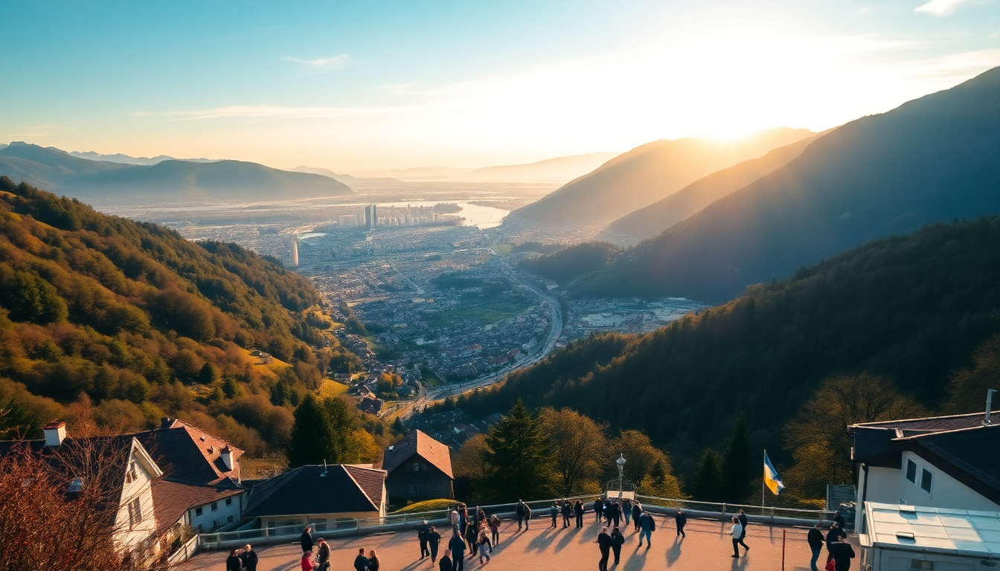

Best Time to Visit Switzerland: Month-by-Month Guide 2025

I’ve been to Switzerland in every season, and I’ll be honest: there’s no perfect month, but there is a perfect month for you. This guide breaks down what each month actually feels like on the ground—crowds, weather, prices—so you can pick the window that matches what you want to do. I’ll anchor everything around Zurich, Lucerne, Interlaken, and Zermatt, because that’s where you’ll likely spend your time.
What’s the weather really like in January?
Cold, but not miserable. Zurich and Lucerne hover around freezing, with grey skies and occasional snow that melts by afternoon. Interlaken is colder and often socked in low clouds, trapping a damp chill. Zermatt, at 1,620 meters, gets proper snow—think crisp air, bluebird days on the slopes, and empty streets if you avoid the Christmas-New Year rush.
- Zurich: Bundle up for the Christmas markets (most run through Jan 6). We grabbed mulled wine at the main market on Bellevue.
- Lucerne: The Chapel Bridge looks stark but beautiful with snow on the rooftops. The Lion Monument is less crowded.
- Interlaken: Paragliding is off-season, but the views of Jungfrau from Höheweg are still worth the walk.
- Zermatt: Skiing is prime. We stayed at Hotel Schweizerhof for the Matterhorn view—worth the splurge.
January is the cheapest month for flights and hotels. If you don’t ski, you’ll find Zurich and Lucerne quiet, almost sleepy.
Should I visit in April for the spring flowers?
No. April is the mud season you’ve heard about. Snow melts in the valleys, rain is frequent, and the famous alpine meadows are still brown. Zurich and Lucerne get drizzle, Interlaken is often foggy, and Zermatt’s lower trails are slushy. That said, prices are low and crowds are thin.
- Zurich: The Niederdorf neighborhood feels almost empty. We had a great lunch at Hiltl, the oldest vegetarian restaurant in the world.
- Lucerne: Lake promenade is wet but walkable. The transport museum is a solid rainy-day backup.
- Interlaken: Harder Kulm funicular often closed for maintenance until May. Check before you go.
- Zermatt: Ski season usually runs through late April. Higher slopes stay good.
If you’re set on hiking, wait until June. If you want cheap travel and don’t mind rain, April works.
When is the best time for hiking and outdoor activities?
Late June through early September. By mid-June, the snow has retreated above 2,000 meters, and the trails are open. July and August are the warmest months, but also the busiest. I did the Eiger Trail in early July—perfect conditions, but I shared the path with a lot of people.
- Interlaken: The Schynige Platte ridge walk is stunning in July. Book the train up early.
- Lucerne: Pilatus and Rigi are both accessible. The Golden Round Trip (boat to Alpnachstad, cogwheel train up, cable car down) is a full day well spent.
- Zermatt: The 5-Seenweg (Five Lakes Trail) is a must-do in August. The reflections of the Matterhorn in Stellisee are real, not photoshopped.
- Zurich: Uetliberg mountain is a quick escape. The planet trail from Uetliberg to Felsenegg takes about two hours.
Accommodation prices peak in August. Book hotels like Hotel Interlaken or Hotel des Balances in Lucerne at least three months out.
Is October a good month for autumn colors?
Yes, but it’s a narrow window. The larch forests in Zermatt turn golden in early to mid-October, and the vineyards around Zurich’s Niederdorf are beautiful. By late October, many cable cars and mountain restaurants close for the shoulder season. You get crisp air, fewer tourists, and lower prices.
- Zermatt: The Gornergrat Railway runs year-round. The view from the top with autumn colors below is better than summer, in my opinion.
- Lucerne: The Lion Monument and Chapel Bridge are less crowded. We had dinner at Wirtshaus Galliker—traditional, no-frills Swiss food.
- Interlaken: Jungfraujoch is still open, but expect wind and cold at 3,454 meters. The train from Kleine Scheidegg is pricey but worth it once.
- Zurich: The old town (Altstadt) is lovely for a walk. The Kunsthaus art museum has a good café for a break.
October is a gamble on weather. Some days feel like summer; others feel like winter. Pack layers.
What about December for Christmas markets?
December is magical, but expensive and crowded. Zurich’s main Christmas market at Hauptbahnhof is one of Europe’s best—huge tree, mulled wine, and a massive indoor market. Lucerne’s market on the Kapellplatz is smaller but more charming. Interlaken’s market is touristy but fun. Zermatt feels like a snow globe.
- Zurich: The Wienachtsdorf market at Sechseläutenplatz has a giant fire bowl and live music. We went on a Tuesday and it was still packed.
- Lucerne: The market runs from late November to Christmas Eve. The carousel near the Chapel Bridge is free for kids.
- Interlaken: Höheweg is lined with stalls. The views of the mountains with lights are postcard-perfect.
- Zermatt: The village is car-free, so walking through the snow-covered streets feels like a movie. Hotel Monte Rosa is historic and cozy.
Book everything by September. Hotels in Zermatt and Lucerne sell out weeks in advance. Prices double from the summer rates.
FAQ
Is Switzerland very expensive in summer? Yes, July and August are the most expensive months for flights and hotels. A mid-range hotel in Interlaken like Hotel Krebs costs around 250 CHF per night in August. You can save by staying in a hostel or booking a room in a nearby village like Wilderswil.
Can I visit Zermatt without skiing? Absolutely. Zermatt has year-round hiking, the Gornergrat viewpoint, and the Matterhorn Glacier Paradise cable car. Winter offers snowshoeing and sledding. The village itself is worth a day—great bakeries and the Hinterdorf historic section.
What’s the best month for a first-time visitor? September. Weather is still warm, crowds thin out after August, and prices drop. You can hike in Zermatt, boat on Lake Lucerne, and visit Zurich without the summer chaos. Just pack a rain jacket.
Conclusion
- January to March: Best for skiing and budget travel. Zermatt is the star; Zurich and Lucerne are quiet.
- April to May: Mud season. Cheap but wet. Avoid for hiking.
- June to August: Peak season for hiking and outdoor activities. Book early, expect crowds.
- September to October: Sweet spot for weather, colors, and lower prices. My personal pick.
- November to December: Christmas markets in Zurich and Lucerne are worth the trip. Zermatt feels like a winter wonderland. Book far ahead.